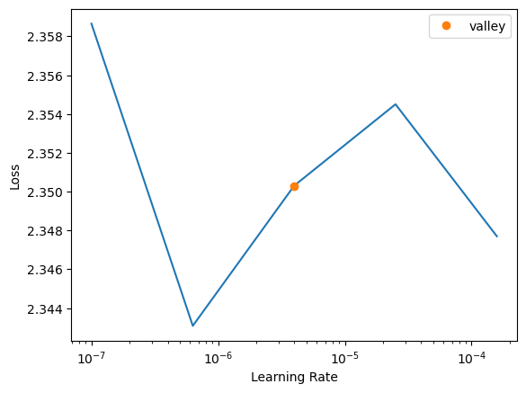
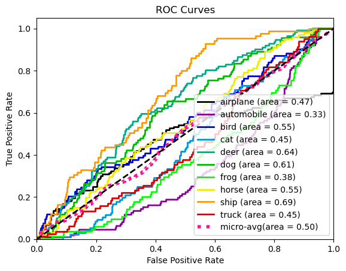
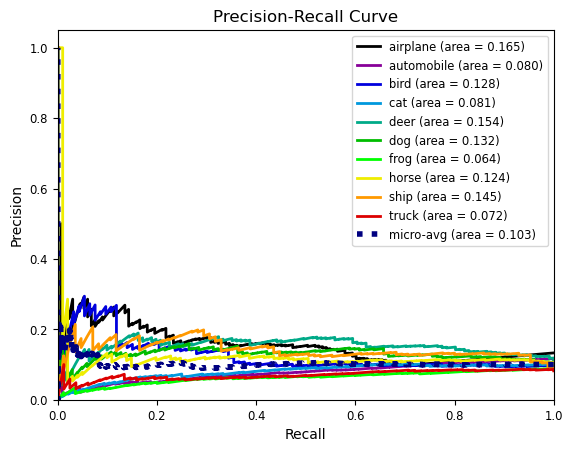
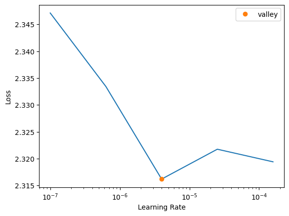
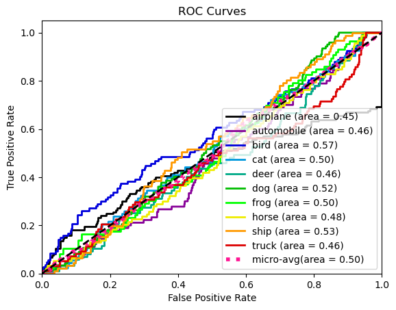
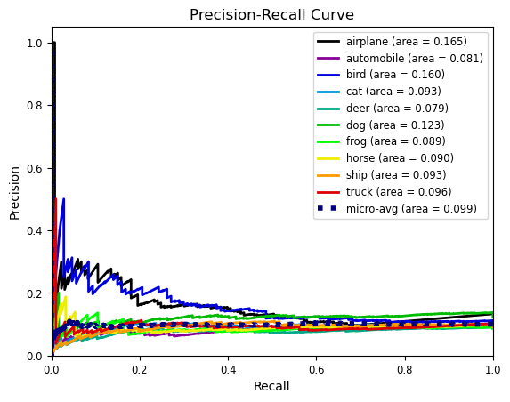

# def get_bt_cifar10_aug_pipelines(size):
# aug_pipelines_1 = get_barlow_twins_aug_pipelines(size=size,
# bw=True, rotate=True,noise=True, jitter=True, blur=True,solar=True,
# resize_scale=(0.4, 1.0),rotate_deg=45,noise_std=0.0125, jitter_s=1.0, blur_s=math.ceil(size/10)+1,
# bw_p=0.2, flip_p=0.5,rotate_p=0.25,noise_p=0.5, jitter_p=0.5, blur_p=0.5,sol_p=0.0,
# stats=cifar_stats,same_on_batch=False, xtra_tfms=[]
# )
# aug_pipelines_2 = get_barlow_twins_aug_pipelines(size=size,
# bw=True, rotate=True,noise=True, jitter=True, blur=True,solar=True,
# resize_scale=(0.4, 1.0),rotate_deg=45,noise_std=0.0125, jitter_s=1.0, blur_s=math.ceil(size/10)+1,sol_t=0.01,sol_a=0.01,
# bw_p=0.2, flip_p=0.5,rotate_p=0.25,noise_p=0.5, jitter_p=0.5, blur_p=0.1,sol_p=0.2,
# stats=cifar_stats,same_on_batch=False, xtra_tfms=[]
# )
# bt_cifar10_aug_pipelines = [aug_pipelines_1,aug_pipelines_2]
# return bt_cifar10_aug_pipelines
# #Add other augmentations here e.g. BYOL augs
# bt_aug_func_dict = {'bt_cifar10_aug_pipelines':get_bt_cifar10_aug_pipelines}
# def get_bt_aug_pipelines(bt_augs,size):
# return bt_aug_func_dict[bt_augs](size)base_supervised
API needed for linear evaluation protocol, and semi-supervised learning (k-nn?) Also includes test set evaluation.
API:
- Train and then test linear head. Requires inputs: encoder, dls_val, augpipe_val, indim,outdim, num_epochs,
get_linear_batch_augs
get_linear_batch_augs (size, resize=True, flip=True, flip_prob=0.5, resize_scale=(0.08, 1.0), resize_ratio=(0.75, 1.3333333333333333), stats=None, cuda=False, xtra_tfms=[])
Input batch augmentations implemented in tv+kornia+fastai
The model for linear evaluation and semi-supervised learning requires an encoder and a (randomly) initialised head.
LM
LM (encoder, numout, encoder_dimension=2048)
Basic linear model
The ‘callback’ for linear evaluation is the following:
LinearBt
LinearBt (aug_pipelines, n_in, show_batch=False, print_augs=False, data=None, tune_model_path=None, tune_save_after=None)
Basic class handling tweaks of the training loop by changing a Learner in various events
Test:
Example usage: First inputs needed. In the next cell we get dls_val and dls_test.
Augmentations and learner:
show_linear_batch
show_linear_batch (dls, n_in, aug, n=2, print_augs=True)
Given a linear learner, show a batch
get_supervised_dls
get_supervised_dls (dataset, pct_dataset_train, pct_dataset_test, bs, dataset_dir, bs_test, size, device)
Get train and test dataloaders for supervised learning
get_supervised_aug_pipelines
get_supervised_aug_pipelines (augs, size)
get_supervised_isic_augmentations
get_supervised_isic_augmentations (size)
get_supervised_cifar10_augmentations
get_supervised_cifar10_augmentations (size)
Test:
This enables us to freeze the encoder as needed:
encoder_head_splitter
encoder_head_splitter (m)
SupervisedLearning allows us to perform either linear evaluation, semi-supervised learning, or standard supervised learning.
SaveSupLearnerModel
SaveSupLearnerModel (experiment_dir, num_run)
Basic class handling tweaks of the training loop by changing a Learner in various events
SupervisedLearning
SupervisedLearning (model, dls_train, aug_pipelines_supervised, n_in, wd, device, num_it=100, num_run=None, experiment_dir=None)
Train model using supervised learning. Either linear evaluation or semi-supervised.
| Type | Default | Details | |
|---|---|---|---|
| model | |||
| dls_train | |||
| aug_pipelines_supervised | |||
| n_in | |||
| wd | |||
| device | |||
| num_it | int | 100 | |
| num_run | NoneType | None | n of num_runs. e.g. num_runs=5 and num_run=3 means this is the 3rd run. |
| experiment_dir | NoneType | None | Basically just tells what name to save checkpoint as - if applicable. |
get_encoder
get_encoder (arch, weight_type, load_pretrained_path=None)
Get an encoder for supervised learner. If load_pretrained_path is not None, load the weights from that path.
load_sup_model
load_sup_model (config, numout, path)
save_metrics
save_metrics (model, aug_pipelines_supervised, experiment_dir, num_run, dls_train, dls_test, numavg=3, deterministic_test=False)
| Type | Default | Details | |
|---|---|---|---|
| model | trained model | ||
| aug_pipelines_supervised | |||
| experiment_dir | where to save | ||
| num_run | how to name metrics files | ||
| dls_train | just used to compute vocab | ||
| dls_test | test set | ||
| numavg | int | 3 | |
| deterministic_test | bool | False |
# #| export
# def get_largest_metric_file(experiment_dir):
# metric_files = [f for f in os.listdir(experiment_dir) if 'metrics' in f]
# if not metric_files:
# return None,None
# max_num = -1
# max_file = ''
# for file in metric_files:
# match = re.search(r'_(\d+)\.pkl$', file)
# if match:
# num = int(match.group(1))
# if num > max_num:
# max_num = num
# max_file = file
# num = max_file.split('.pkl')[0].split('_')[-1]
# return max_file,num# #| hide
# with tempfile.TemporaryDirectory() as dir:
# save_dict_to_gdrive({'a':1}, dir, 'metrics_num_run_1')
# save_dict_to_gdrive({'a':2}, dir, 'metrics_num_run_2')
# save_dict_to_gdrive({'a':4}, dir, 'metrics_num_run_4')
# print(os.listdir(dir))
# max_file,num = get_largest_metric_file(dir)
# test_eq(max_file,'metrics_num_run_4.pkl')
# test_eq(num,'4')main_sup_train
main_sup_train (config, dataset_dir=None, num_run=None, train=True, test=True, experiment_dir=None)
Basically map from config to training a supervised model. Optionally save checkpoints of learner. Also compute metrics on test set and save. If train is False load model according to num_run (means it already exists) and just compute metrics.
| Type | Default | Details | |
|---|---|---|---|
| config | |||
| dataset_dir | NoneType | None | |
| num_run | NoneType | None | run we are up to - tell us what name to give the saved checkpoint, if applicable. |
| train | bool | True | if False, load model and compute and save metrics only |
| test | bool | True | |
| experiment_dir | NoneType | None | where to save checkpoints |
check_run_exists
check_run_exists (experiment_dir, num_run)
main_sup_experiment
main_sup_experiment (config, base_dir, dataset_dir)
Run a supervised learning experiment with the given configuration and save the results to the experiment directory. Return the experiment directory and experiment hash.
Full example
# #| hide
with tempfile.TemporaryDirectory() as base_dir:
config_path = '../configs/cifar10/supervised/sup_test_config.yaml'
config = load_config(config_path)
pretty_print_ns(config)
experiment_dir,experiment_hash,num_run = main_sup_experiment(config,base_dir,dataset_dir=None)
print(os.listdir(experiment_dir))
print(os.listdir(base_dir))
print('experiment_dir and base_dir')dataset: cifar10
arch: smallres
train_type: supervised
weight_type: random
learn_type: standard
size: 32
n_in: 3
bs: 64
bs_test: 64
sup_augs: supervised_cifar10_augmentations
wd: 0.0
freeze_epochs: 1
num_it: 10
pct_dataset_train: 0.01
pct_dataset_test: 0.1
epochs: 1
num_runs: 2
load_pretrained_path: None
encoder_dimension: 512
The experiment_dir is: /var/folders/95/qkdymsl93lz1tvnqky1vn_p00000gn/T/tmpeedfi0b2/supervised/cifar10/smallres/58adecf5 and the experiment hash is: 58adecf5
Configuration saved to /var/folders/95/qkdymsl93lz1tvnqky1vn_p00000gn/T/tmpeedfi0b2/supervised/cifar10/smallres/58adecf5/config.yaml
The git hash is: 1b1dded7163406a323457a46a0ecea8bacf4b04b
num_run=1 doesn't exist. Training now.
RandomResizedCrop:
encodes: (object,object) -> RandomResizedCropdecodes:
Pipeline: /Users/hamishhaggerty/opt/anaconda3/envs/thesis/lib/python3.10/site-packages/fastprogress/fastprogress.py:73: UserWarning: Your generator is empty.
warn("Your generator is empty.")| epoch | train_loss | valid_loss | accuracy | time |
|---|---|---|---|---|
| 0 | 2.347234 | None | None | 00:03 |
Model state dict saved to /var/folders/95/qkdymsl93lz1tvnqky1vn_p00000gn/T/tmpeedfi0b2/supervised/cifar10/smallres/58adecf5/trained_model_num_run_1.pth
computing metrics on test set.
running `predict_whole_model`/Users/hamishhaggerty/opt/anaconda3/envs/thesis/lib/python3.10/site-packages/sklearn/metrics/_classification.py:1327: UndefinedMetricWarning: Precision and F-score are ill-defined and being set to 0.0 in labels with no predicted samples. Use `zero_division` parameter to control this behavior.
_warn_prf(average, modifier, msg_start, len(result))
/Users/hamishhaggerty/opt/anaconda3/envs/thesis/lib/python3.10/site-packages/sklearn/metrics/_classification.py:1327: UndefinedMetricWarning: Precision and F-score are ill-defined and being set to 0.0 in labels with no predicted samples. Use `zero_division` parameter to control this behavior.
_warn_prf(average, modifier, msg_start, len(result))
/Users/hamishhaggerty/opt/anaconda3/envs/thesis/lib/python3.10/site-packages/sklearn/metrics/_classification.py:1327: UndefinedMetricWarning: Precision and F-score are ill-defined and being set to 0.0 in labels with no predicted samples. Use `zero_division` parameter to control this behavior.
_warn_prf(average, modifier, msg_start, len(result))
/Users/hamishhaggerty/opt/anaconda3/envs/thesis/lib/python3.10/site-packages/sklearn/metrics/_classification.py:1327: UndefinedMetricWarning: Precision and F-score are ill-defined and being set to 0.0 in labels with no predicted samples. Use `zero_division` parameter to control this behavior.
_warn_prf(average, modifier, msg_start, len(result))
/Users/hamishhaggerty/opt/anaconda3/envs/thesis/lib/python3.10/site-packages/sklearn/metrics/_classification.py:1327: UndefinedMetricWarning: Precision and F-score are ill-defined and being set to 0.0 in labels with no predicted samples. Use `zero_division` parameter to control this behavior.
_warn_prf(average, modifier, msg_start, len(result))
/Users/hamishhaggerty/opt/anaconda3/envs/thesis/lib/python3.10/site-packages/sklearn/metrics/_classification.py:1327: UndefinedMetricWarning: Precision and F-score are ill-defined and being set to 0.0 in labels with no predicted samples. Use `zero_division` parameter to control this behavior.
_warn_prf(average, modifier, msg_start, len(result)) precision recall f1-score support
airplane 1.00 0.30 0.46 133
automobile 0.00 0.00 0.00 112
bird 0.50 0.01 0.02 93
cat 0.00 0.00 0.00 96
deer 0.00 0.00 0.00 111
dog 0.00 0.00 0.00 102
frog 0.00 0.00 0.00 85
horse 0.00 0.00 0.00 101
ship 0.09 1.00 0.16 85
truck 0.00 0.00 0.00 82
accuracy 0.13 1000
macro avg 0.16 0.13 0.06 1000
weighted avg 0.19 0.13 0.08 1000
auc_dict is: {'airplane': 0.4723140030005811, 'automobile': 0.33448459620334625, 'bird': 0.5503787744069424, 'cat': 0.45438099188790565, 'deer': 0.6396649743106436, 'dog': 0.6080396523865671, 'frog': 0.3816457730633237, 'horse': 0.5547638189847905, 'ship': 0.6911218257794922, 'truck': 0.4535177214517243}


auc_dict is: {'airplane': 0.16474747874243187, 'automobile': 0.07964735340934488, 'bird': 0.12836125684868444, 'cat': 0.08108436324162081, 'deer': 0.15367216812204582, 'dog': 0.1319117268093623, 'frog': 0.06374041778060538, 'horse': 0.12355952886202198, 'ship': 0.14531493375436247, 'truck': 0.07210147530044403}
Metrics computation time: 11.30 seconds
num_run=2 doesn't exist. Training now.
RandomResizedCrop:
encodes: (object,object) -> RandomResizedCropdecodes:
Pipeline: /Users/hamishhaggerty/opt/anaconda3/envs/thesis/lib/python3.10/site-packages/fastprogress/fastprogress.py:73: UserWarning: Your generator is empty.
warn("Your generator is empty.")| epoch | train_loss | valid_loss | accuracy | time |
|---|---|---|---|---|
| 0 | 2.330904 | None | None | 00:04 |
Model state dict saved to /var/folders/95/qkdymsl93lz1tvnqky1vn_p00000gn/T/tmpeedfi0b2/supervised/cifar10/smallres/58adecf5/trained_model_num_run_2.pth
computing metrics on test set.
running `predict_whole_model`/Users/hamishhaggerty/opt/anaconda3/envs/thesis/lib/python3.10/site-packages/sklearn/metrics/_classification.py:1327: UndefinedMetricWarning: Precision and F-score are ill-defined and being set to 0.0 in labels with no predicted samples. Use `zero_division` parameter to control this behavior.
_warn_prf(average, modifier, msg_start, len(result))
/Users/hamishhaggerty/opt/anaconda3/envs/thesis/lib/python3.10/site-packages/sklearn/metrics/_classification.py:1327: UndefinedMetricWarning: Precision and F-score are ill-defined and being set to 0.0 in labels with no predicted samples. Use `zero_division` parameter to control this behavior.
_warn_prf(average, modifier, msg_start, len(result))
/Users/hamishhaggerty/opt/anaconda3/envs/thesis/lib/python3.10/site-packages/sklearn/metrics/_classification.py:1327: UndefinedMetricWarning: Precision and F-score are ill-defined and being set to 0.0 in labels with no predicted samples. Use `zero_division` parameter to control this behavior.
_warn_prf(average, modifier, msg_start, len(result))
/Users/hamishhaggerty/opt/anaconda3/envs/thesis/lib/python3.10/site-packages/sklearn/metrics/_classification.py:1327: UndefinedMetricWarning: Precision and F-score are ill-defined and being set to 0.0 in labels with no predicted samples. Use `zero_division` parameter to control this behavior.
_warn_prf(average, modifier, msg_start, len(result))
/Users/hamishhaggerty/opt/anaconda3/envs/thesis/lib/python3.10/site-packages/sklearn/metrics/_classification.py:1327: UndefinedMetricWarning: Precision and F-score are ill-defined and being set to 0.0 in labels with no predicted samples. Use `zero_division` parameter to control this behavior.
_warn_prf(average, modifier, msg_start, len(result))
/Users/hamishhaggerty/opt/anaconda3/envs/thesis/lib/python3.10/site-packages/sklearn/metrics/_classification.py:1327: UndefinedMetricWarning: Precision and F-score are ill-defined and being set to 0.0 in labels with no predicted samples. Use `zero_division` parameter to control this behavior.
_warn_prf(average, modifier, msg_start, len(result)) precision recall f1-score support
airplane 0.42 0.39 0.40 133
automobile 0.08 0.31 0.13 90
bird 0.00 0.00 0.00 107
cat 0.00 0.00 0.00 93
deer 0.00 0.00 0.00 87
dog 0.00 0.00 0.00 122
frog 0.00 0.00 0.00 86
horse 0.00 0.00 0.00 93
ship 0.00 0.00 0.00 91
truck 0.12 0.62 0.20 98
accuracy 0.14 1000
macro avg 0.06 0.13 0.07 1000
weighted avg 0.07 0.14 0.08 1000
auc_dict is: {'airplane': 0.44563831724640324, 'automobile': 0.463058608058608, 'bird': 0.5671840169124343, 'cat': 0.504872497065832, 'deer': 0.461167554229457, 'dog': 0.516752866051757, 'frog': 0.5026334537682561, 'horse': 0.4755486004908063, 'ship': 0.5331665034635331, 'truck': 0.4552072491967962}


auc_dict is: {'airplane': 0.16511664979584073, 'automobile': 0.08059534476650243, 'bird': 0.16002385525068155, 'cat': 0.09289151758176256, 'deer': 0.07870456324248618, 'dog': 0.12325328375621142, 'frog': 0.08896711593028082, 'horse': 0.09030965750445723, 'ship': 0.09273068752108606, 'truck': 0.09628101087936629}
Metrics computation time: 7.03 seconds
precision recall f1-score support
airplane 0.71 0.35 0.43 133.0
automobile 0.04 0.16 0.06 101.0
bird 0.25 0.01 0.01 100.0
cat 0.00 0.00 0.00 94.5
deer 0.00 0.00 0.00 99.0
dog 0.00 0.00 0.00 112.0
frog 0.00 0.00 0.00 85.5
horse 0.00 0.00 0.00 97.0
ship 0.04 0.50 0.08 88.0
truck 0.06 0.31 0.10 90.0
accuracy 0.13 1000.0
macro avg 0.11 0.13 0.07 1000.0
weighted avg 0.13 0.13 0.08 1000.0
mean acc is 0.13350000232458115 with std 0.010606602139266699
Metadata saved to /var/folders/95/qkdymsl93lz1tvnqky1vn_p00000gn/T/tmpeedfi0b2/supervised/cifar10/smallres/58adecf5/metadata.yaml
Updated experiment index for hash: 58adecf5
['metrics_num_run_1.pkl', 'metrics_num_run_2.pkl', 'trained_model_num_run_2.pth', 'trained_model_num_run_1.pth', 'metadata.yaml', 'config.yaml', 'mean_results.pkl']
['supervised', 'experiment_index.json']
experiment_dir and base_dirmain_fine_tune_isic
main_fine_tune_isic (config, base_dir, dataset_dir)
Just call main_sup_experiment for each different pct_dataset_train value and for given config